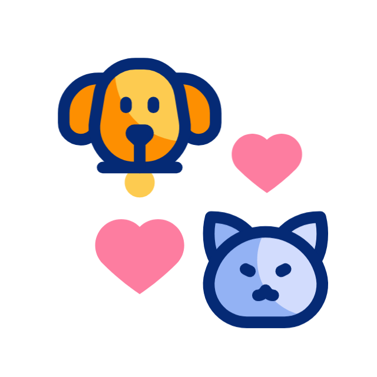
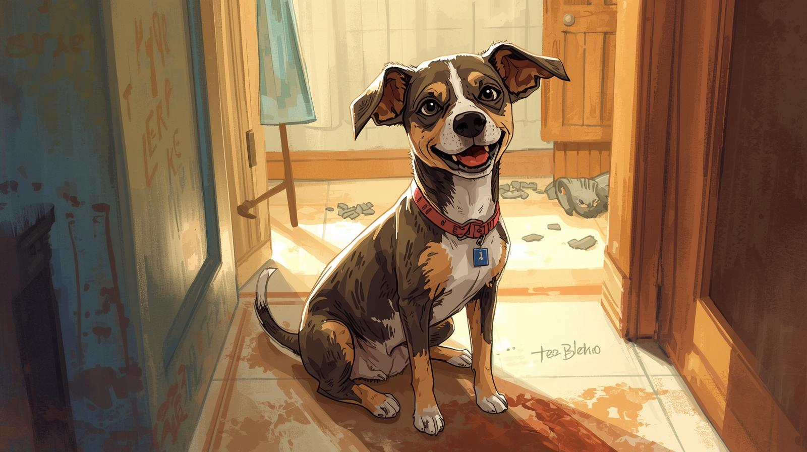
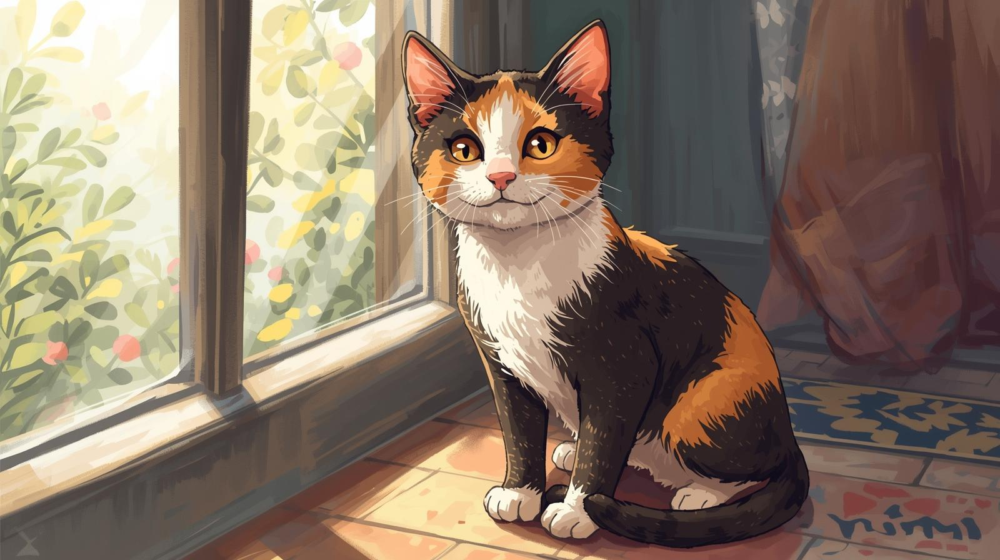
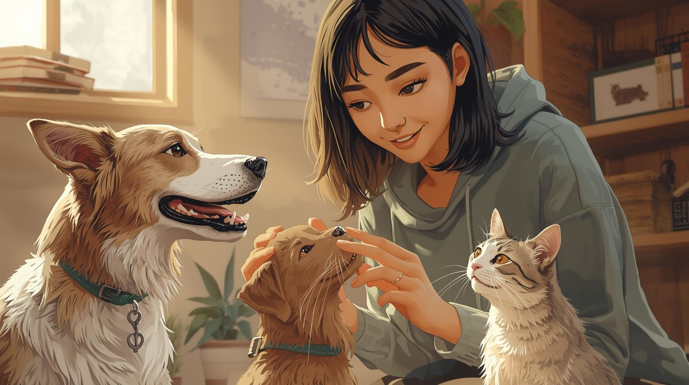
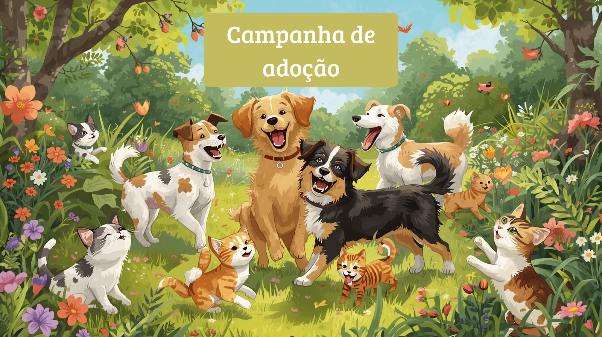
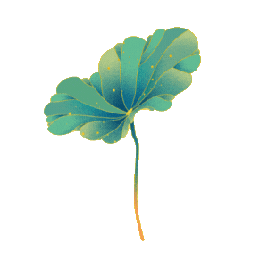

Resgate e Esperança: A Jornada da Mel 🐶💛

ONG Patinhas de Amor
422 mil inscritos

14 mil

Não gostei
Compartilhar
Download
30.000 visualizações
Conheça a emocionante história da Mel, uma cadelinha resgatada das ruas pela ONG Patinhas de Amor. Neste vídeo, você vai acompanhar desde o resgate até o dia em que ela encontrou um lar cheio de carinho. Prepare-se para se inspirar com essa transformação repleta de amor e superação.

Do Abandono ao Afeto: A História do Thor
ONG Laços de Pata
2,1 mil visualizações

Um Novo Lar para a Mimi
ONG Amigos de Quatro Patas
2,1 mil visualizações

Voluntários que Transformam Vidas
ONG Coração Animal
2,1 mil visualizações


Campanha de Adoção: 10 Animais à Espera de Amor
ONG Mãos e Patas Unidas
2,1 mil visualizações